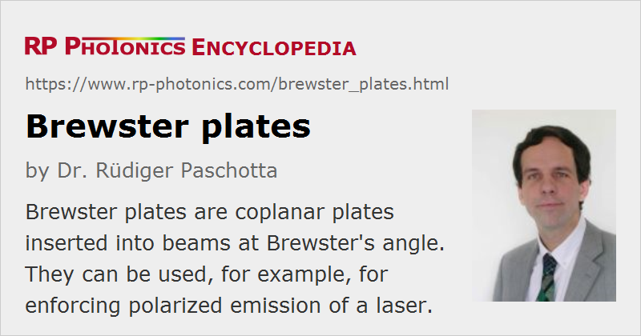

Brewster Plates
Definition: coplanar plates inserted into beams at Brewster's angle
German: Brewster-Platten
Categories: general optics, photonic devices
How to cite the article; suggest additional literature
Author: Dr. Rüdiger Paschotta
A Brewster plate is a plate of an optical material with coplanar surfaces, which is inserted into a polarized laser beam under Brewster's angle so that minimum reflection losses occur for p polarization.
Brewster's angle is the angle of incidence (measured against the direction of normal incidence), calculated from the refractive index of the plate according to
Figure 2 shows how the reflection losses of p-polarized and s-polarized light at each surface of the plate depend on the angle of incidence.

Brewster plates are often inserted into laser resonators of bulk lasers, often with the purpose of introducing polarization-dependent losses. This can force the laser to emit light with a stable linear polarization, the direction of which corresponds to p polarization at the Brewster plate. In this state of operation, the losses caused by a Brewster plate can be very low, if the polarization state is not rotated or distorted by the other intracavity components.
Depolarization within the resonator (e.g. caused by thermal effects in the gain medium) (→ thermal lensing) can couple some of the power into s polarization, which then experiences high reflection losses at the Brewster plate. Therefore, insertion of a Brewster plate can significantly decrease the laser efficiency even if the losses of the Brewster plate for p polarization are very small. The spatial shape of the reflected light can be complicated and reveal information on the depolarization mechanism.

Apart from polarization-dependent loss, a Brewster plate can exhibit thermal lensing when used in a high-power laser, and its nonlinearity and chromatic dispersion can be relevant in a mode-locked laser.
Suppliers
The RP Photonics Buyer's Guide contains 16 suppliers for Brewster plates. Among them:
Questions and Comments from Users
Here you can submit questions and comments. As far as they get accepted by the author, they will appear above this paragraph together with the author’s answer. The author will decide on acceptance based on certain criteria. Essentially, the issue must be of sufficiently broad interest.
Please do not enter personal data here; we would otherwise delete it soon. (See also our privacy declaration.) If you wish to receive personal feedback or consultancy from the author, please contact him e.g. via e-mail.
By submitting the information, you give your consent to the potential publication of your inputs on our website according to our rules. (If you later retract your consent, we will delete those inputs.) As your inputs are first reviewed by the author, they may be published with some delay.
See also: Brewster's angle, depolarization loss, polarization of light, etalons, The Photonics Spotlight 2012-03-03
and other articles in the categories general optics, photonic devices
|  |
If you like this page, please share the link with your friends and colleagues, e.g. via social media:
These sharing buttons are implemented in a privacy-friendly way!